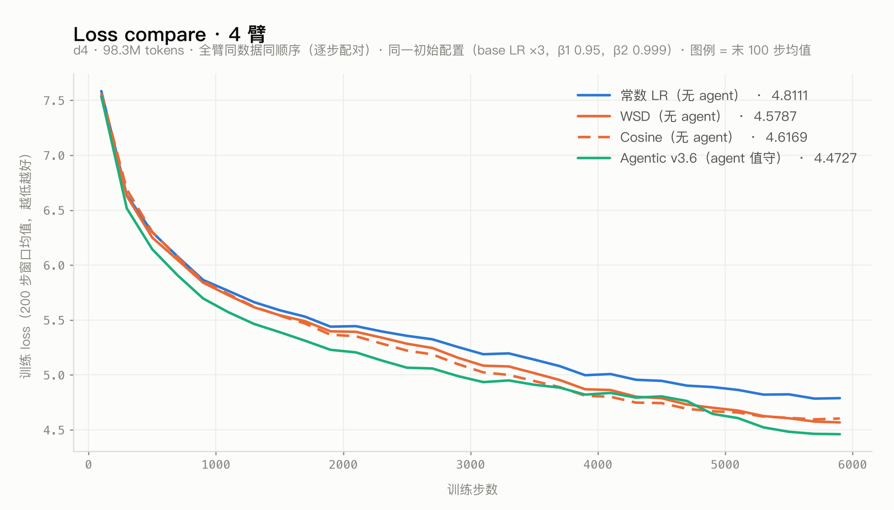

Agentic Optimizer · view board

| run | arm | 末 100 步 train loss | |
|---|---|---|---|
| v36_agentic_poor_d4_20260829-0230 | Agentic | 4.4727 | 打开 → |
| v34_agentic_poor_d4_20260828-0253 | Agentic | 4.5857 | 打开 → |
| v27_agentic_poor_d4_20260827-0413 | Agentic | 4.6434 | 打开 → |
| v27_const_poor_d4_20260827-0216 | Constant LR | 4.8111 | 打开 → |